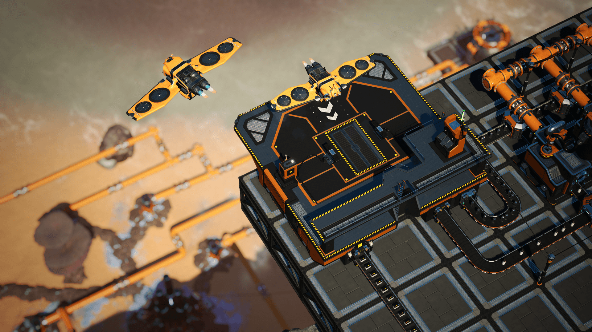
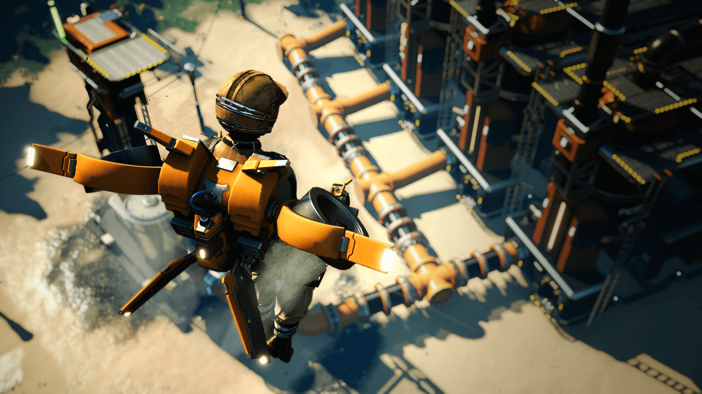
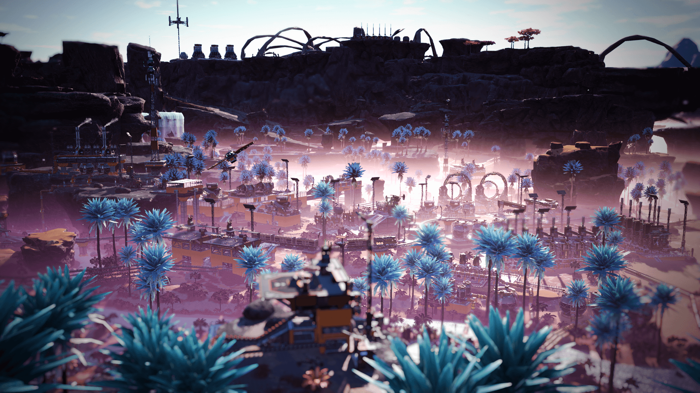

2021.4.14
由 Snutt Treptow - 社区经理
虽然将货物于传送带上运送颇为酷炫，但没人能否认使用无人机运输货物是更好的选择，所以我们将其加入了《Satisfactory》。但为了不至于干扰无人机的航电系统，我可不能站在上面。那也是没办法的事情。
不管怎么说，在 Update 4 中我们不仅加入了无人机，还有不少另外的酷炫内容，例如全新的用来进行核精炼加工的复杂生产线，使用资源增压机产生氮气，威武的粒子加速器，可让你用俯视角构筑的喷气背包，滑索工具以及灯光效果（！！！）等等。
那么，说到无人机！它们是为了长程低容量资源运送而生的。无人机为全自动工作，会在两个固定的港口穿行，并将可自动绕过路上的任何障碍。虽然它们不能搬运太多东西，但它们将尽其所能。它们需要电源驱动，旅行路程越长，它们的能源利用率就越划算！
但在天上飞的不仅仅是无人机！来自 FICSIT Inc. 的先锋们也可运用全新装备，例如全新的喷气背包来从高处一览他们的生产线路，并于更高的地方进行建设！喷气背包需要从电网获取电力，并不需要任何其他的燃料。不过，它们并不是日常通行或探索中最快的交通工具，那毕竟不可能万事都争第一嘛。
除了以上这些之外，我们还加入了名为滑索的全新工具，你可使用此工具在你基地中的各个电线杆之间滑行！
我们已经将游戏中的核精炼加工进行扩展，现在你能够生产钚燃料棒（Plutonium Fuel Rod）。不仅如此，本更新中还加入了一系列全新建筑物，将会在核精炼加工中起到重要作用，比如搅拌机，粒子加速器，资源井增压机和分离机。此外，我们还加入了一些能提升游戏已有要素的建筑，例如蓄电站和断路器。
觉得生活昏暗无光，想转换下心情吗？虽然我们不能直接影响你的心情，但起码我们将灯光加入了游戏！你可以使用灯光来照亮你的工厂，甚至可以更改灯光的颜色！现在你的工厂将可比我的未来更加明亮了！
本更新还包含了一些对游戏的优化以及一些进一步增强游戏体验的功能，比如更快打开建造目录，复制/粘贴建筑物，全新的音乐，更重要的是，你现在还可以来摸摸蜥蜴狗狗了！
为了找出 Update 4 中的全部秘密，Jace 和我在我们的新办公室里面来了场寻宝游戏。所以如果你想进一步了解更新 4 中的更多内容，就来看看吧！如果你不想错过我们游戏开发时的各种新闻，就来关注我们的社交网络账号吧！本游戏目前仍然处于抢先体验阶段，之后还将推出诸多新内容！所以在那之前，祝你玩的愉快，希望你们能喜欢我们在 Update 4 中加入的所有内容！